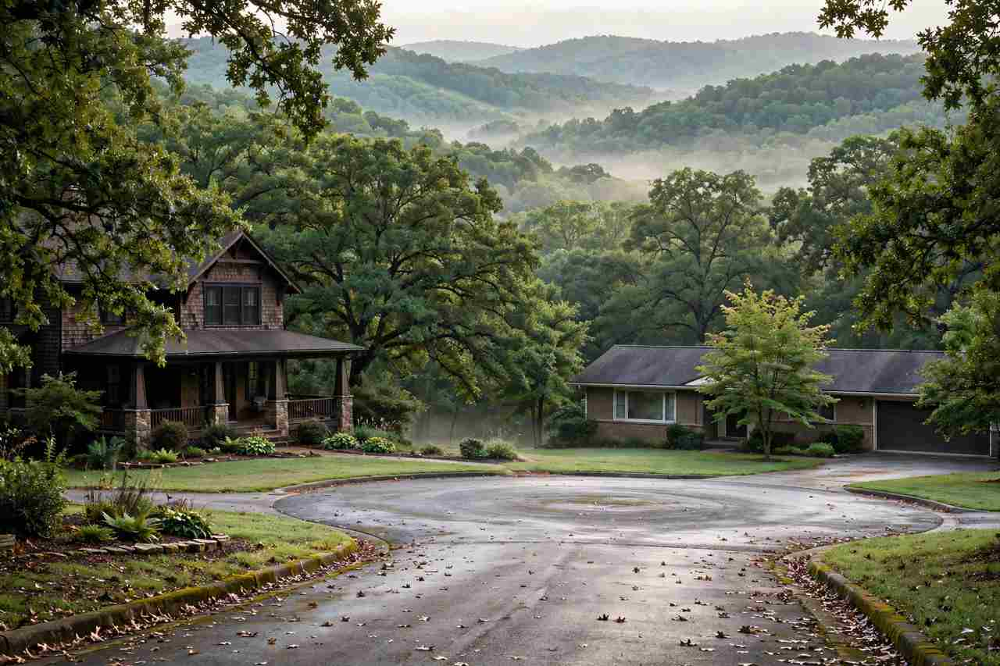

Rodent Control · Earle, AR
Trusted Rodent Control in Earle, AR
Murvo delivers same-day rodent control in Earle for rats and mice in attics, walls, kitchens, and crawl spaces. Local crews start with a thorough inspection, then remove, exclude, and monitor until the problem is solved. You approve one flat-rate price in writing before any work starts, and every job carries a written guarantee across Crittenden County. Service covers 1 ZIP codes across Crittenden County, including 72331, with same-day appointments where schedules allow.
24/7Availability
1ZIP codes covered
Same-dayResponse
Licensed · Upfront options · Written guarantees · Fully insured
Earle at a glance
Local Rodent Control for Earle, AR.
Crittenden County
Countyeastern Arkansas
RegionLittle Rock · 114 mi
Nearest metro110 miles east of Little Rock
From Little Rock1
ZIP codes covered Service by service in Earle
Rodent Control Services Available in Earle
Rodent-only specialists serving Earle and Crittenden County. Every service below is explained in local terms - the species involved, the entry points that matter in bungalows and ranch homes with crawlspaces, historic homes, and suburban homes under mature tree canopy, and the seasonal timing that decides whether a fix lasts.
- 01Rodent Control↗
- 02Rodent Inspection↗
- 03Rodent Removal↗
- 04Rodent Exclusion↗
- 05Rodent Proofing↗
- 06Rat Control↗
- 07Mice Control↗
- 08Mouse Removal↗
- 09Rat Removal↗
- 10Rodent Trapping↗
- 11Rodent Baiting↗
- 12Rodenticide Application↗
- 13Attic Rodent Removal↗
- 14Crawl Space Rodent Removal↗
- 15Wall Rodent Removal↗
- 16Kitchen Rodent Control↗
- 17Garage Rodent Control↗
- 18Commercial Rodent Control↗
- 19Residential Rodent Control↗
- 20Emergency Rodent Removal↗
- 21Same-Day Rodent Control↗
- 22Rodent Damage Repair↗
- 23Rodent Waste Cleanup↗
- 24Rodent Disinfection↗
- 25Rodent Odor Removal↗
- 26Dead Rodent Removal↗
- 27Rodent Dropping Cleanup↗
- 28Rodent Exclusion for Roofs↗
- 29Rodent Exclusion for Vents↗
- 30Rodent Exclusion for Chimneys↗
Rodent Control in Earle
Rodent Control in Earle
In Earle, bungalows and ranch homes with crawlspaces, historic homes, and suburban homes under mature tree canopy give rodents warmth, shelter, and easy routes through rooflines and eaves, attic vents, crawlspace doors and vents, and gaps where tree limbs touch the roof, especially once nights turn cold across Crittenden County. Our licensed, insured technicians identify the species, map active runways, and build a control plan around your home rather than a generic spray. Every visit is documented with photos, trap records, and clear next steps for your household.
In Earle, rodent control is not a generic spray-and-go service. Rodents exploit rooflines and eaves, attic vents, crawlspace doors and vents, and gaps where tree limbs touch the roof in bungalows and ranch homes with crawlspaces, historic homes, and suburban homes under mature tree canopy, and a fix that ignores those routes does not last. Murvo's Earle team inspects first, shows you the evidence - droppings, gnaw marks, entry gaps - and then lays out the work with a flat-rate written quote. We serve all of Crittenden County from Earle, including Parkin, Jennette, and every job is covered by our written workmanship guarantee. The Earle crews who handle rodent control also handle the follow-through - proofing, cleanup, and monitoring - so one visit can close the whole problem.
Consider how a visit unfolds. Throughout, photographs and written notes keep you informed, so progress is something you can see and verify rather than something you are asked to trust. The technician walks the exterior before touching anything indoors, noting gaps, rub marks, and food sources. Inside, attic and crawl-space evidence shapes the trapping plan, which is adjusted visit by visit as numbers change. Cleanup guidance covers contaminated areas safely, and exclusion work closes the route permanently. Photographs taken at the start make those later comparisons honest, because memory alone tends to blur the details.
Getting started takes one conversation, day or night, because our lines stay open 24/7. Work proceeds only after your approval, in stages you can follow, and a final walkthrough reviews every seal and every monitoring result before sign-off. We book a window that suits your household, confirm access needs in advance, and arrive prepared. Questions after sign-off are welcome at any hour, and the same written record helps any technician pick up your case immediately.
Need help quickly in Earle? Call any time — the emergency line is staffed 24/7, and same-day rodent control appointments are available in most areas. We inspect first, explain the plan in plain language, and put the flat rate in writing before work starts. In Crittenden County, most cases involve the Roof rat (Rattus rattus) and the Norway rat (Rattus norvegicus), so the inspection focuses on their routes first.
The honest answer is that it depends on species, activity level, and how much sealing your home needs, which is why Murvo inspects first and then gives you a flat-rate quote in writing. For national context only, Angi's 2026 data averages rat and mouse removal and control at $396, typically $189 to $655; that is not a Murvo price, and your written quote is the figure you pay.
Rodent Inspection in Earle
Rodent Inspection in Earle
In Crittenden County, bungalows and ranch homes with crawlspaces, historic homes, and suburban homes under mature tree canopy often hide entry gaps that stay invisible from ground level: lifted shingles, unsealed pipe penetrations, and garage door corners where Roof rat (Rattus rattus) and Norway rat (Rattus norvegicus) slip through. A Murvo rodent inspection covers the roofline, foundation, attic, and crawl space in one visit, so you learn exactly where rodents get in and what closing each gap involves.
In Earle, rodent inspection is not a generic spray-and-go service. Rodents exploit rooflines and eaves, attic vents, crawlspace doors and vents, and gaps where tree limbs touch the roof in bungalows and ranch homes with crawlspaces, historic homes, and suburban homes under mature tree canopy, and a fix that ignores those routes does not last. Murvo's Earle team inspects first, shows you the evidence - droppings, gnaw marks, entry gaps - and then lays out the work with a flat-rate written quote. We serve all of Crittenden County from Earle, including Parkin, Jennette, and every job is covered by our written workmanship guarantee. Seasonal timing matters for rodent inspection in Earle: Rodents are most active in Earle from September through February.
The inspection starts outside, where we check the foundation, siding, pipe penetrations, garage doors, and roof junctions, because mice can squeeze through a gap the width of a pencil. Inside, we examine the attic, crawl space, insulation, stored items, and food areas for droppings, nests, rub marks, and gnaw damage. We also note where bungalows and ranch homes with crawlspaces, historic homes, and suburban homes under mature tree canopy create hidden routes through rooflines and eaves, attic vents, crawlspace doors and vents, and gaps where tree limbs touch the roof. Every finding is photographed and explained, and recommendations are marked urgent or preventive so you can stage the work sensibly.
Your part is simple: point out noises, droppings, and any past problems. Before leaving, you walk through the evidence together, discuss priorities, and decide what happens next, with no obligation attached. Ours is everything else. A background-checked technician arrives on time, protects access areas, and inspects inside and out against a set checklist. If you decide to proceed, those findings become the working plan, so no second survey is needed before approved repairs begin.
Inspections are the fastest way we help in Earle: same-day appointments are available in most areas, and urgent calls are answered 24/7. A typical rodent inspection takes under an hour for most homes, and you leave the visit with photos, written findings, and a flat-rate quote for any work we recommend, so decisions never wait on us. That is also why Murvo pairs removal with exclusion in Earle - treating the animal without closing rooflines and eaves, attic vents, crawlspace doors and vents, and gaps where tree limbs touch the roof rarely lasts.
Nationally, a professional rodent inspection typically runs $100 to $200 according to Angi's 2026 data, and it is often credited toward the job if you proceed. Murvo confirms your exact rodent inspection price before the visit and quotes any follow-up work as a flat rate in writing after inspection, so the figure you approve is the figure you pay, with no hourly billing.
Rodent Removal in Earle
Rodent Removal in Earle
How quickly should you act once droppings appear in living areas? Promptly, because contamination builds daily and young rodents mature fast. Murvo responds with licensed, insured, background-checked technicians who remove animals hygienically, explain when each room is safe again, and back the completed removal with a written workmanship guarantee.
In Earle, rodent removal is not a generic spray-and-go service. Rodents exploit rooflines and eaves, attic vents, crawlspace doors and vents, and gaps where tree limbs touch the roof in bungalows and ranch homes with crawlspaces, historic homes, and suburban homes under mature tree canopy, and a fix that ignores those routes does not last. Murvo's Earle team inspects first, shows you the evidence - droppings, gnaw marks, entry gaps - and then lays out the work with a flat-rate written quote. We serve all of Crittenden County from Earle, including Parkin, Jennette, and every job is covered by our written workmanship guarantee. Homes near Jennette tend to show activity first in Earle, which is why inspections start with rooflines and eaves, attic vents, crawlspace doors and vents, and gaps where tree limbs touch the roof.
We favor trap-based, no-poison removal first where practical, which is safer around children and pets and avoids animals dying in hidden voids. Traps are matched to the species and setting, placed where droppings and rub marks show real travel routes, then cleared and reset until numbers reach zero. Dead animals in inaccessible places are located and retrieved before odor develops, contaminated nesting material is removed, and sealing recommendations are prioritized so the route indoors closes permanently. Monitoring then confirms the home stays clear.
Once you book rodent removal in Earle, we agree a time window and your technician arrives with traps, protective equipment, and a clear plan. When catches reach zero, we walk through the results, discuss sealing, and confirm your written guarantee before closing the job. Progress is photographed and shared with you throughout the program. The first visit confirms activity and sets traps; return visits clear and reset them on schedule. Nothing is left unexplained.
For active infestations in Earle, rodent removal can usually start the same day you call, and our team answers 24/7 when a rodent is loose in a living area. The first visit confirms activity and sets traps straight away; return visits then clear and reset them until monitoring shows the property is completely clear. In Crittenden County, most cases involve the Roof rat (Rattus rattus) and the Norway rat (Rattus norvegicus), so the inspection focuses on their routes first.
Cost depends on the species, how many animals are active, and how much sealing the home needs afterwards, so Murvo inspects first and quotes one flat rate in writing. For national context only, Angi's 2026 data averages rat and mouse removal at $396, typically $189 to $655. That benchmark is not a Murvo price; your written quote is the exact figure.
Rodent Exclusion in Earle
Rodent Exclusion in Earle
Exclusion is also the safest long-term strategy for Earle homes, because a sealed house needs far less bait and fewer repeat treatments. Murvo's licensed, insured crews finish roof, vent, and chimney work to weatherproof standards, walk every sealed opening with you afterwards, and back the result with a written workmanship guarantee you can hold us to.
Homeowners in Earle call Murvo for rodent exclusion because the problem here is specific: Roof rat (Rattus rattus) pressure around bungalows and ranch homes with crawlspaces, historic homes, and suburban homes under mature tree canopy, tight access at rooflines and eaves, attic vents, crawlspace doors and vents, and gaps where tree limbs touch the roof, and activity that follows the local season. Our Crittenden County crews diagnose the real source before recommending work, explain the options in plain language, and quote one flat rate in writing. Across Earle - including Parkin, Jennette - every visit is backed by licensed, insured technicians and our written workmanship guarantee. Around Jennette, Crawfordsville, Turrell, the pattern is similar: Norway rat (Rattus norvegicus) finds rooflines and eaves, attic vents, crawlspace doors and vents, and gaps where tree limbs touch the roof first, and lasting rodent exclusion has to close those routes.
Exclusion begins with a full exterior survey, paying particular attention to junctions where different materials meet, because those seams and transitions open up as a building ages and settles. Door sweeps are fitted, pipe gaps closed, and specialist roof, vent, and chimney sealing finished to weatherproof standards. Each opening is sealed with materials matched to it: copper mesh packed into gaps, hardware cloth over vents, metal flashing at roof junctions, and quality sealants for smaller cracks. Active animals are trapped out first.
The visit starts with a check that no animals remain inside, using trapping and monitoring where needed. A later re-check confirms the seals are holding and activity has stopped. Once clear, your background-checked crew seals the agreed openings with chew-resistant materials, working cleanly around your home. Before leaving, we show you each finished seal, explain how it was protected, and confirm the guarantee paperwork. You approve the finished work before we close the job.
Rodent exclusion in Earle usually starts with a survey visit we can often schedule the same day you call. Sealing itself is booked as soon as any active animals are cleared, because nothing is sealed inside. Most homes are fully sealed within days, not weeks, and urgent entry points near wiring or food areas are prioritized first. Murvo's Earle crews explain the finding either way, and the flat-rate quote leaves the decision with you.
For national context, Angi's 2026 data puts basic exclusion at $200 to $600, depending on access and the number of openings. That is a benchmark, not a Murvo price. After surveying your Earle home, we list every opening that needs sealing and quote one flat rate in writing, so you pay for the work your property actually needs and nothing more.
Rodent Proofing in Earle
Rodent Proofing in Earle
As colder weather approaches Crittenden County, rodents actively hunt for warm indoor shelter, and unsealed homes are found fast. A Murvo rodent proofing survey checks the roofline, vents, utility entries, and doors before that rush begins. Because proofing prevents infestations instead of reacting to them, it reduces reliance on baits and is backed by our written workmanship guarantee.
When you need rodent proofing in Earle, the job starts with what is actually happening in your part of Crittenden County. Murvo crews work Earle every week, so they know how Roof rat (Rattus rattus) and Norway rat (Rattus norvegicus) behave around bungalows and ranch homes with crawlspaces, historic homes, and suburban homes under mature tree canopy here - and where they get in: rooflines and eaves, attic vents, crawlspace doors and vents, and gaps where tree limbs touch the roof. We arrive equipped for the full job, confirm the flat rate in writing before work begins, and cover the whole Earle area, including Parkin, Jennette. No call-center runaround and no open-ended hourly billing - just a local crew, a clear plan, and a written quote you approve first. The Earle crews who handle rodent proofing also handle the follow-through - proofing, cleanup, and monitoring - so one visit can close the whole problem.
Where proofing overlaps with structural exclusion, we use the same chew-resistant materials: copper mesh, hardware cloth, metal flashing, and durable sealants matched to each opening. Around kitchens, we coordinate sealing behind units and along pipe runs; in garages, we tackle stored-food and clutter harborage directly. The written plan distinguishes homeowner tasks from professional work, and seasonal re-checks after completion catch new gaps early, before they can turn into another indoor infestation for your household. That keeps protection current year after year.
On proofing day, expect one tidy visit for most homes. Before leaving, you walk the finished work together, confirm the guarantee in writing, and book the seasonal re-check that keeps the protection current year after year. Agreed sealing and screening are completed, sweeps are fitted, and attractant advice is tailored to your garage, kitchen, and yard. The re-check is not a formality, because it catches shifted sweeps, damaged screens, and new gaps before rodents discover them first.
Rodent proofing is preventive, so there is rarely a rush, but surveys in Earle can often be arranged the same day you call, and always within a few days. Most proofing work is completed in a single visit once you approve the plan, and booking before colder weather gives your home protection ahead of the seasonal rush indoors. An Earle inspection confirms it on site - dropping size, gnaw marks, and entry points tell the story quickly.
For national context, Angi's 2026 data puts exclusion, the core of proofing, at $200 to $600 for basic work. That figure is a benchmark, not a Murvo price. After surveying your Earle property, we separate quick homeowner wins from specialist sealing and quote the professional work as one flat rate in writing, so you can stage spending sensibly.
Rat Control in Earle
Rat Control in Earle
What separates control from a temporary lull? Monitoring that continues after the last catch. Murvo keeps checking until routes stay quiet, removes trapped rats hygienically, and finishes with exclusion so replacements cannot follow the same path. Licensed, insured technicians document every visit, and urgent calls are answered 24/7.
When you need rat control in Earle, the job starts with what is actually happening in your part of Crittenden County. Murvo crews work Earle every week, so they know how Roof rat (Rattus rattus) and Norway rat (Rattus norvegicus) behave around bungalows and ranch homes with crawlspaces, historic homes, and suburban homes under mature tree canopy here - and where they get in: rooflines and eaves, attic vents, crawlspace doors and vents, and gaps where tree limbs touch the roof. We arrive equipped for the full job, confirm the flat rate in writing before work begins, and cover the whole Earle area, including Parkin, Jennette. No call-center runaround and no open-ended hourly billing - just a local crew, a clear plan, and a written quote you approve first. Around Jennette, Crawfordsville, Turrell, the pattern is similar: Norway rat (Rattus norvegicus) finds rooflines and eaves, attic vents, crawlspace doors and vents, and gaps where tree limbs touch the roof first, and lasting rat control has to close those routes.
Control starts with species and route identification, because roof rats and Norway rats behave and enter very differently. We then pair the program with roofline and entry-point exclusion, plus attic removal and cleanup where nests are found overhead. Technicians pre-bait unset traps along proven runways so wary rats feed confidently, then set them and return to check, clear, and adjust placements until activity stops. Trapped rats are removed hygienically, and each visit is documented with locations and counts. Progress is visible at every visit.
Between visits, keep pet food secured and avoid moving any traps, even slightly, since position matters. Your background-checked technician returns on schedule, removes trapped rats promptly, adjusts placements, and reports counts plainly. The program closes only when monitoring confirms activity has ended and exclusion is finished, with your guarantee confirmed in writing at sign-off. Keep gates and access points available on scheduled days where possible, since uninterrupted checks keep the program on its planned timetable.
Rats do not wait, and neither do we: rat control in Earle can usually start with a same-day inspection, and urgent calls are answered 24/7. Pre-baiting begins on the first visit once you approve the written quote, traps are set as soon as rats are feeding confidently, and scheduled checks keep the program moving until activity stops. An Earle inspection confirms it on site - dropping size, gnaw marks, and entry points tell the story quickly.
Rat work varies with species, colony size, and how many entry points need sealing, so Murvo inspects first and quotes one flat rate in writing. For national context only, Angi's 2026 data averages rat control and removal at $396, typically $189 to $655. That benchmark is not a Murvo price; the written quote for your Earle home is the exact figure you pay.
Mice Control in Earle
Mice Control in Earle
How many mice does one sighting usually mean? More than one, and the colony grows while treatment waits. Murvo builds mice control around trapping and sealing rather than bait, uses licensed, insured technicians, and confirms the result with follow-up monitoring, so a quiet week is verified instead of simply hoped for.
Homeowners in Earle call Murvo for mice control because the problem here is specific: Roof rat (Rattus rattus) pressure around bungalows and ranch homes with crawlspaces, historic homes, and suburban homes under mature tree canopy, tight access at rooflines and eaves, attic vents, crawlspace doors and vents, and gaps where tree limbs touch the roof, and activity that follows the local season. Our Crittenden County crews diagnose the real source before recommending work, explain the options in plain language, and quote one flat rate in writing. Across Earle - including Parkin, Jennette - every visit is backed by licensed, insured technicians and our written workmanship guarantee. Coverage for mice control spans 1 ZIP codes in Crittenden County, including 72331.
Mice travel short, familiar routes, hugging walls and rarely crossing open floors. Control exploits that habit: traps are clustered along baseboards, behind appliances, and inside attic voids where droppings concentrate, rather than scattered hopefully around rooms. Technicians clear and reset on schedule, tracking numbers visit by visit until they reach zero. Sealing then closes pencil-width gaps behind baseboards, around radiator pipes, and at service entries, while scent-marked surfaces are cleaned so new mice find no welcoming trail. That is why placements stay fixed between checks unless evidence, rather than impatience, gives a reason to move them.
Book mice control in Earle with one call, and same-day visits are available in many areas. Your technician surveys the kitchen, attic, and voids, explains where mice are traveling, and gives you a flat-rate written quote before setting a single trap. Trap checks are scheduled before we leave, and a follow-up visit confirms activity has stopped before the job is signed off. Everything is explained in plain language for your household.
Mice programs move quickly in Earle: a mice control survey can often be arranged the same day you call, and traps are set on that first visit once you approve the quote. Because mice investigate new objects fast, catches usually begin quickly, and scheduled check visits follow until a final confirmation shows activity has fully stopped. In Crittenden County, activity follows the local season, so timing the work matters as much as the method.
Mouse work is priced by the number of rooms affected and the amount of sealing involved, so Murvo surveys first and quotes one flat rate in writing. For national context only, Angi's 2026 data averages rat and mouse control and removal at $396, typically $189 to $655. That is not a Murvo price; your written quote is exact.
Mouse Removal in Earle
Mouse Removal in Earle
Removal is only half the job in Crittenden County homes, because new mice follow the same scent trails and gaps within days. Murvo pairs trapping with droppings and nesting cleanup, safe disinfection, and proper exclusion sealing, all delivered by licensed, insured, background-checked technicians. For repeated problems, seasonal proofing checks sweeps and seals before the fall rush of mice seeking warmth.
When you need mouse removal in Earle, the job starts with what is actually happening in your part of Crittenden County. Murvo crews work Earle every week, so they know how Roof rat (Rattus rattus) and Norway rat (Rattus norvegicus) behave around bungalows and ranch homes with crawlspaces, historic homes, and suburban homes under mature tree canopy here - and where they get in: rooflines and eaves, attic vents, crawlspace doors and vents, and gaps where tree limbs touch the roof. We arrive equipped for the full job, confirm the flat rate in writing before work begins, and cover the whole Earle area, including Parkin, Jennette. No call-center runaround and no open-ended hourly billing - just a local crew, a clear plan, and a written quote you approve first. Coverage for mouse removal spans 1 ZIP codes in Crittenden County, including 72331.
We favor trap-based, no-poison removal, which is safer around children and pets and avoids mice dying in hidden voids. We also advise on safe cleaning of cabinets and storage areas afterwards, so your kitchen feels properly yours again once the program is complete and monitoring confirms zero activity. Sealing then closes the route permanently. Cleanup follows CDC guidance: droppings and nesting debris are never dry-swept, because that can spread contamination; surfaces are disinfected first, then waste is removed hygienically. That finish is guaranteed in writing.
For urgent mouse problems in Earle, contact Murvo for a same-day response where available. Your technician surveys the home, explains the multi-trap plan, and confirms a flat-rate written quote before starting. Return visits are scheduled to clear and reset traps, and cleanup and sealing follow once catches reach zero. The final visit confirms the result and your written workmanship guarantee. You are updated after every visit, without ever chasing us.
In Earle, mouse removal can often begin the same day you call, especially where mice are active in kitchens or living areas. The first visit surveys nesting sites and sets traps immediately after you approve the quote; because mice investigate traps quickly, catches usually start fast, and return visits continue until numbers reach zero. In Crittenden County, activity follows the local season, so timing the work matters as much as the method.
Mouse removal cost reflects the number of rooms involved and how much sealing is needed, which is why Murvo surveys first and quotes a flat rate in writing. For national context only, Angi's 2026 data averages rat and mouse removal at $396, typically $189 to $655. That benchmark is not a Murvo price; your written quote covers your exact program.
Rat Removal in Earle
Rat Removal in Earle
Roof rats and Norway rats behave and enter very differently, and in Earle the distinction decides where traps go and which gaps get sealed. bungalows and ranch homes with crawlspaces, historic homes, and suburban homes under mature tree canopy reached through rooflines and eaves, attic vents, crawlspace doors and vents, and gaps where tree limbs touch the roof can hide attic colonies or basement harborage for months. Our licensed, background-checked technicians trace the full route, remove the colony, and sanitize contaminated areas where nests were found.
When you need rat removal in Earle, the job starts with what is actually happening in your part of Crittenden County. Murvo crews work Earle every week, so they know how Roof rat (Rattus rattus) and Norway rat (Rattus norvegicus) behave around bungalows and ranch homes with crawlspaces, historic homes, and suburban homes under mature tree canopy here - and where they get in: rooflines and eaves, attic vents, crawlspace doors and vents, and gaps where tree limbs touch the roof. We arrive equipped for the full job, confirm the flat rate in writing before work begins, and cover the whole Earle area, including Parkin, Jennette. No call-center runaround and no open-ended hourly billing - just a local crew, a clear plan, and a written quote you approve first. Seasonal timing matters for rat removal in Earle: Rodents are most active in Earle from September through February.
Scale determines everything, so assessment precedes action. Technicians establish species, estimate colony size from droppings and runways, and locate harborage before placing a single trap. Pre-baiting unset traps then builds feeding confidence in these naturally cautious animals. Once set, traps are checked frequently, animals are removed hygienically, and placements shift as activity contracts toward its last pockets. Attic colonies receive dedicated work overhead, while any carcass in a void is retrieved before odor develops. Visit notes record weather and access too, since both affect rat movement and help explain any slower nights.
Book and we will agree a visit time, with same-day appointments for active infestations where available. Repeat visits are scheduled in advance, progress is reported after each one, and sealing follows once catches stop and monitoring stays clear. Your technician assesses the colony, explains each stage, and confirms the written quote before pre-baiting begins. Every visit is documented with counts and locations, so the final clearance rests on a complete record rather than a single quiet check.
Rats in a living area cannot wait for a routine slot. In Earle, rat removal can usually start the same day you call and our line answers 24/7 for urgent cases. Pre-baiting starts on the first visit after you approve the written quote, traps are set once rats feed confidently — typically within days — and frequent returns run until monitoring confirms the colony is gone. Murvo's Earle crews explain the finding either way, and the flat-rate quote leaves the decision with you.
Colony size, access, and the sealing needed afterwards drive the price, so Murvo assesses the property first and quotes a flat rate in writing covering the full program. Angi's 2026 data, for national context only, averages rat removal at $396 and typically ranges from $189 to $655; that is a benchmark, not a Murvo price.
Rodent Trapping in Earle
Rodent Trapping in Earle
In bungalows and ranch homes with crawlspaces, historic homes, and suburban homes under mature tree canopy, species behavior drives every choice. Wary Roof rats (Rattus rattus) need days of pre-baiting before unset traps can be armed, while Norway rats (Rattus norvegicus) investigate clustered traps quickly near rooflines and eaves, attic vents, crawlspace doors and vents, and gaps where tree limbs touch the roof routes across Crittenden County. Our technicians match device, bait, and position to that behavior instead of relying on a single generic setup.
In Earle, rodent trapping is not a generic spray-and-go service. Rodents exploit rooflines and eaves, attic vents, crawlspace doors and vents, and gaps where tree limbs touch the roof in bungalows and ranch homes with crawlspaces, historic homes, and suburban homes under mature tree canopy, and a fix that ignores those routes does not last. Murvo's Earle team inspects first, shows you the evidence - droppings, gnaw marks, entry gaps - and then lays out the work with a flat-rate written quote. We serve all of Crittenden County from Earle, including Parkin, Jennette, and every job is covered by our written workmanship guarantee. The Earle crews who handle rodent trapping also handle the follow-through - proofing, cleanup, and monitoring - so one visit can close the whole problem.
A trapping program starts with inspection: identifying the species, mapping runways, and finding where droppings and rub marks show real travel. For rats, we pre-bait unset traps for several days, a step most DIY attempts skip, then set them for maximum effect. Mice receive clustered traps at hotspots. Technicians return on schedule to clear, reset, and record every catch. Traps are set perpendicular to walls and along beams, pipes, and fence lines, matched to the setting. Placements shift as activity patterns change.
Book rodent trapping in Earle and a technician can often start the same day. When numbers reach zero, we confirm monitoring is clear and discuss sealing. The first visit inspects, maps activity, and places or pre-baits traps; you approve a flat-rate written quote covering the program including check visits before we proceed. Scheduled returns clear and reset traps and share catch records with you. The finished program is guaranteed in writing.
In Earle, rodent trapping can usually start the same day you call, with traps placed or pre-baiting begun on the first visit after you approve the quote. Mice often investigate within the first night; wary rats need a few days of pre-baiting before traps are set. Scheduled check visits then keep catches moving until numbers reach zero. Around Earle, bungalows and ranch homes with crawlspaces, historic homes, and suburban homes under mature tree canopy give rodents the most cover, which is why entry points get checked before traps are set.
Rather than charging by the trap or by the visit, Murvo inspects first and quotes rodent trapping as one flat rate in writing for the complete program, including its check visits. Price depends on species, activity level, and how many checks are needed, and there is no hourly billing at any stage, so there are no per-visit surprises.
Rodent Baiting in Earle
Rodent Baiting in Earle
In bungalows and ranch homes with crawlspaces, historic homes, and suburban homes under mature tree canopy, bait has a narrow, specific job: reducing outdoor pressure while sealing removes the indoor route through rooflines and eaves, attic vents, crawlspace doors and vents, and gaps where tree limbs touch the roof. Our technicians in Crittenden County place secured stations along runways away from play areas, label and photograph each one, and check consumption on schedule until activity ends and stations come out.
Homeowners in Earle call Murvo for rodent baiting because the problem here is specific: Roof rat (Rattus rattus) pressure around bungalows and ranch homes with crawlspaces, historic homes, and suburban homes under mature tree canopy, tight access at rooflines and eaves, attic vents, crawlspace doors and vents, and gaps where tree limbs touch the roof, and activity that follows the local season. Our Crittenden County crews diagnose the real source before recommending work, explain the options in plain language, and quote one flat rate in writing. Across Earle - including Parkin, Jennette - every visit is backed by licensed, insured technicians and our written workmanship guarantee. Seasonal timing matters for rodent baiting in Earle: Rodents are most active in Earle from September through February.
Where baiting is not appropriate indoors, we say so, and recommend trapping first followed by proofing of gaps around pipes, vents, and doors. That exclusion-first approach reduces reliance on bait over time, which matters for households with children, pets, or visiting wildlife in Earle. Consumption records from each visit show whether activity is falling, holding, or moving, guiding whether stations stay, move, or come out entirely in favor of sealing and trapping alone. You receive those records after every monitoring visit.
Booking starts with a conversation about pets, children, and wildlife on your property, because that shapes placement before we arrive. The inspection visit maps activity, agrees each proposed station location with you, and confirms the written quote. Approved stations are installed locked and labeled that visit, with monitoring dates booked before we leave. Nothing about placement, product type, or monitoring frequency is left vague, and you can ask for the record at any point.
Deliberate setup matters more than speed with rodent baiting, but the first step is still fast: an inspection in Earle can often be arranged the same day you call. Stations are placed only after activity is mapped and you approve the written quote and each location, then monitoring runs on a fixed schedule until consumption stops and activity is confirmed clear. If you are seeing signs now, an inspection this week is the fastest way to know which situation you are in.
Baiting cost depends on how many locked stations your property needs and how long monitoring runs, so Murvo inspects and maps activity first, then quotes one flat rate in writing covering placement and scheduled checks. There are no per-visit surprises, and because our approach is exclusion-first, the goal is always to reduce and eventually remove stations, not maintain them forever.
Rodenticide Application in Earle
Rodenticide Application in Earle
Regulation shapes product choice in Arkansas: California restricts anticoagulant rodenticides, other states impose their own limits, and Murvo complies with every applicable rule. You receive copies of product labels and safety information for anything applied at your Earle property, and we talk through children, pets, livestock, and wildlife concerns before any flat-rate written quote is agreed.
In Earle, rodenticide application is not a generic spray-and-go service. Rodents exploit rooflines and eaves, attic vents, crawlspace doors and vents, and gaps where tree limbs touch the roof in bungalows and ranch homes with crawlspaces, historic homes, and suburban homes under mature tree canopy, and a fix that ignores those routes does not last. Murvo's Earle team inspects first, shows you the evidence - droppings, gnaw marks, entry gaps - and then lays out the work with a flat-rate written quote. We serve all of Crittenden County from Earle, including Parkin, Jennette, and every job is covered by our written workmanship guarantee. Seasonal timing matters for rodenticide application in Earle: Rodents are most active in Earle from September through February.
Application begins with a thorough inspection to confirm species and activity levels and to decide whether rodenticide is needed at all; often, professional trapping plus controlled outdoor baiting is enough, and if trapping alone can solve your problem safely, that is the route we recommend first. When treatment is justified, we follow Inspect, Remove, Exclude, Clean, and Monitor: stations are mapped, labeled, anchored, and checked on schedule, with amounts recorded at every visit. Products stay inside locked stations at all times.
Before the visit, tell us about children, pets, livestock, and wildlife using the property; that information shapes product and placement decisions. On the day, your background-checked technician installs any approved stations locked and labeled, records the details, and explains what to watch for. Scheduled checks follow until activity ends and stations are removed. Label information, amounts, and visit dates stay in your records throughout, so the treatment history is complete and available whenever needed.
No responsible rodenticide application starts without an inspection, and in Earle that inspection can often be scheduled the same day you call. If treatment is justified and you approve the written quote, locked stations are installed on that visit. Monitoring then runs on schedule, and treatment stops as soon as the data shows activity has ended. In Crittenden County, most cases involve the Roof rat (Rattus rattus) and the Norway rat (Rattus norvegicus), so the inspection focuses on their routes first.
Application cost depends on the number of locked stations, the product required under Arkansas rules, and how long monitoring runs. Murvo inspects first, explains whether trapping or exclusion could avoid chemical control entirely, and then quotes one flat rate in writing before work begins. The quote covers scheduled monitoring visits, so there are no per-visit surprises later.
Attic Rodent Removal in Earle
Attic Rodent Removal in Earle
Removal is only step two for Earle attics. After trapping clears the animals, Murvo delivers roofline exclusion with metal mesh and sealed flashing, advises on trimming overhanging branches that bridge rats onto your roof, and leaves monitoring traps briefly to confirm nothing was sealed inside. The whole job carries one flat-rate written quote agreed beforehand.
When you need attic rodent removal in Earle, the job starts with what is actually happening in your part of Crittenden County. Murvo crews work Earle every week, so they know how Roof rat (Rattus rattus) and Norway rat (Rattus norvegicus) behave around bungalows and ranch homes with crawlspaces, historic homes, and suburban homes under mature tree canopy here - and where they get in: rooflines and eaves, attic vents, crawlspace doors and vents, and gaps where tree limbs touch the roof. We arrive equipped for the full job, confirm the flat rate in writing before work begins, and cover the whole Earle area, including Parkin, Jennette. No call-center runaround and no open-ended hourly billing - just a local crew, a clear plan, and a written quote you approve first. Coverage for attic rodent removal spans 1 ZIP codes in Crittenden County, including 72331.
Attic work follows Inspect, Remove, Exclude, Clean, and Monitor. Once clear, roofline entry points are sealed with metal mesh and flashing as part of wider proofing, and dropping cleanup and disinfection are arranged where insulation is contaminated. A detailed inspection covers the attic, roof, and eaves, identifying species, nests, droppings, and gnawed cables. Targeted, humane trapping is then set in the attic to clear active animals quickly, with checks on schedule. Monitoring traps stay briefly after sealing to confirm the attic is empty and quiet.
After booking, we confirm safe attic access and any pets or stored items to work around. On arrival, your background-checked technician inspects, explains the plan in plain language, and starts trapping once you approve the written quote. Follow-up visits are booked ahead to clear traps and complete sealing. A final monitoring check and walkthrough confirm the result before we close the job. Insulation and wiring findings are reported to you too.
Overhead scratching in Earle often gets a same-day attic rodent removal visit, and attics with chewed wiring are prioritized because of the fire risk. Trapping starts on the first visit once you approve the written quote, checks run on schedule, and most attics are cleared and sealed within days. Monitoring stays in place briefly afterwards to confirm nothing remains inside. In Crittenden County, most cases involve the Roof rat (Rattus rattus) and the Norway rat (Rattus norvegicus), so the inspection focuses on their routes first.
Attic costs depend on how many animals are active, how much sealing the roofline needs, and whether contaminated insulation requires cleanup, so Murvo inspects first and quotes one flat rate in writing. That quote covers the removal program described, with cleanup options priced separately in writing before you decide, so there are no surprises once work is underway.
Crawl Space Rodent Removal in Earle
Crawl Space Rodent Removal in Earle
Most Earle crawl-space problems surface indirectly: a smell through the floorboards, a torn vapor barrier, droppings found during unrelated repairs. Murvo inspects beneath the home, traps active animals there, and seals vents and foundation gaps. One flat-rate written quote is agreed before trapping starts below.
Homeowners in Earle call Murvo for crawl space rodent removal because the problem here is specific: Roof rat (Rattus rattus) pressure around bungalows and ranch homes with crawlspaces, historic homes, and suburban homes under mature tree canopy, tight access at rooflines and eaves, attic vents, crawlspace doors and vents, and gaps where tree limbs touch the roof, and activity that follows the local season. Our Crittenden County crews diagnose the real source before recommending work, explain the options in plain language, and quote one flat rate in writing. Across Earle - including Parkin, Jennette - every visit is backed by licensed, insured technicians and our written workmanship guarantee. In Earle, crawl space rodent removal calls most often involve bungalows and ranch homes with crawlspaces, historic homes, and suburban homes under mature tree canopy, where rooflines and eaves, attic vents, crawlspace doors and vents, and gaps where tree limbs touch the roof decide whether the fix holds.
Cleanup beneath a home follows careful practice throughout. Technicians also trace connections upward through wall voids, checking whether activity reaches the attic, and report moisture issues with practical recommendations. Photographs of every finished seal accompany your guarantee paperwork, creating a record of exactly what was closed. Droppings and nesting debris are never dry-swept, since disturbing them can spread contamination; surfaces are disinfected first, then waste is bagged and removed by technicians wearing protective equipment. Vent and pier sealing is checked from inside the space, not assumed sound from a glance outside.
Book crawl space rodent removal in Earle and we will schedule an under-home inspection, often within days and sooner for strong odors or heavy activity. Clearance, vent screening, and cleanup then follow in sequence. Monitoring confirms the space is quiet, and photographs of finished sealing accompany your guarantee. Your technician photographs conditions below, explains the plan, and confirms a flat-rate written quote before trapping starts. No extra vents are billed beyond the agreed scope.
For crawl space rodent removal in Earle, inspections are usually arranged within a few days — and sooner when odors are drifting into living areas or activity sounds heavy. Trapping begins on the first visit after you approve the written quote, clearance and sealing follow in sequence, and monitoring stays in place until the space below is confirmed quiet. Murvo's Earle crews explain the finding either way, and the flat-rate quote leaves the decision with you.
Crawl-space costs depend on access, how many vents and gaps need sealing, and whether waste cleanup is required, so Murvo inspects first and quotes one flat rate in writing. If extra vents need sealing within the agreed scope, there are no surprises, and cleanup options are priced in writing before you decide whether to include them.
Wall Rodent Removal in Earle
Wall Rodent Removal in Earle
Most Earle wall calls start at night, when scratching behind the drywall makes sleep impossible. Murvo locates the activity by listening, tracing entry routes, and using inspection cameras where access allows, then traps at void access points. A flat-rate written quote comes before any access work is considered.
Homeowners in Earle call Murvo for wall rodent removal because the problem here is specific: Roof rat (Rattus rattus) pressure around bungalows and ranch homes with crawlspaces, historic homes, and suburban homes under mature tree canopy, tight access at rooflines and eaves, attic vents, crawlspace doors and vents, and gaps where tree limbs touch the roof, and activity that follows the local season. Our Crittenden County crews diagnose the real source before recommending work, explain the options in plain language, and quote one flat rate in writing. Across Earle - including Parkin, Jennette - every visit is backed by licensed, insured technicians and our written workmanship guarantee. Homes near Jennette tend to show activity first in Earle, which is why inspections start with rooflines and eaves, attic vents, crawlspace doors and vents, and gaps where tree limbs touch the roof.
Once the void is clear, the route gets closed and the space made safe. Monitoring at key access points and repeat quiet-wall checks then confirm silence before any minimal, agreed access cut is made good. Baseboard and pipe gaps linked to kitchen activity are sealed as part of wider proofing. If a rodent has died inside, retrieval is followed by sanitation: contaminated material is never dry-swept, surfaces are disinfected first, and odor treatment discourages new animals from investigating. Only then is the job closed, with the monitoring record and any sanitation work documented for you.
After booking, tell us when the noises happen; timing helps pinpoint the active void before we arrive. Sign-off happens only when monitoring confirms silence. On the day, your background-checked technician listens, traces, and inspects with cameras where possible, then sets traps at access points once you approve the quote. Follow-up visits clear traps and run quiet-wall checks at different times of day. Any access cut is agreed and made good neatly.
In Earle, wall rodent removal locating visits are often available the same day you call, especially for persistent scratching keeping you awake. Trapping is set at access points on that first visit once you approve the written quote, and because rodents travel the void nightly, results usually follow within days, confirmed by quiet-wall checks before we sign off. Murvo's Earle crews explain the finding either way, and the flat-rate quote leaves the decision with you.
Wall work pricing depends on how precisely activity can be located and whether a minimal access cut is needed, which is why Murvo locates the activity first and quotes a flat rate in writing. That way wall access work never becomes an open-ended bill, and the quote covers the trapping, sealing, and monitoring described in your plan.
Kitchen Rodent Control in Earle
Kitchen Rodent Control in Earle
Behind the stove is where the trouble usually hides. Warmth, crumbs and a drip under the sink draw Roof rat (Rattus rattus) and Norway rat (Rattus norvegicus) night after night in Earle kitchens. Murvo clears the activity, blocks the gaps they travel through, and gives you a flat-rate written quote before any work begins at your home.
Homeowners in Earle call Murvo for kitchen rodent control because the problem here is specific: Roof rat (Rattus rattus) pressure around bungalows and ranch homes with crawlspaces, historic homes, and suburban homes under mature tree canopy, tight access at rooflines and eaves, attic vents, crawlspace doors and vents, and gaps where tree limbs touch the roof, and activity that follows the local season. Our Crittenden County crews diagnose the real source before recommending work, explain the options in plain language, and quote one flat rate in writing. Across Earle - including Parkin, Jennette - every visit is backed by licensed, insured technicians and our written workmanship guarantee. Around Jennette, Crawfordsville, Turrell, the pattern is similar: Norway rat (Rattus norvegicus) finds rooflines and eaves, attic vents, crawlspace doors and vents, and gaps where tree limbs touch the roof first, and lasting kitchen rodent control has to close those routes.
Cupboard hinges, kick plates and pipe collars often reveal more than the room itself. Removal stays targeted and discreet. Afterward, sealing closes the routes we documented, surfaces touched by droppings receive proper cleaning, and we walk through small habits that help: lids sealed, spills wiped from hidden edges, and pet food lifted overnight. We examine those details first, then work outward into adjoining voids and the basement or garage beyond. Monitoring points stay in place until repeat visits show the kitchen has gone quiet.
Tell us what you noticed, and we will schedule a visit that fits around meals and family routines. The technician inspects first, explains the findings in plain terms, and puts the price in writing. With your approval, trapping and sealing begin, followed by cleaning of affected areas. Later checks review traps and monitors, and we do not close the visit series until the kitchen shows no fresh signs of rodent activity at all.
You can reach us by phone 24/7, and reports of droppings close to food preparation surfaces are given priority when we schedule. A same-day visit in Earle may be possible in many cases, depending on technician availability. When you call, tell us what you found and we will offer the earliest appointment available. In Crittenden County, most cases involve the Roof rat (Rattus rattus) and the Norway rat (Rattus norvegicus), so the inspection focuses on their routes first.
Cost depends on how many rodents are active, where they are entering, and how much sealing and cleanup the kitchen needs. Murvo inspects first, then gives one flat-rate written quote covering trapping, sealing and follow-up monitoring, with no hourly billing or add-on surprises. You approve the full price before any work begins, and the quote is backed by our written workmanship guarantee.
Garage Rodent Control in Earle
Garage Rodent Control in Earle
That torn seed bag in the corner matters more than it looks. Garages shelter Roof rat (Rattus rattus) and Norway rat (Rattus norvegicus) close to stored food, soft nesting material and an easy path indoors. Murvo's garage rodent control in Earle removes them, seals the door line and walls, and starts with a flat-rate written quote you approve first.
Homeowners in Earle call Murvo for garage rodent control because the problem here is specific: Roof rat (Rattus rattus) pressure around bungalows and ranch homes with crawlspaces, historic homes, and suburban homes under mature tree canopy, tight access at rooflines and eaves, attic vents, crawlspace doors and vents, and gaps where tree limbs touch the roof, and activity that follows the local season. Our Crittenden County crews diagnose the real source before recommending work, explain the options in plain language, and quote one flat rate in writing. Across Earle - including Parkin, Jennette - every visit is backed by licensed, insured technicians and our written workmanship guarantee. Coverage for garage rodent control spans 1 ZIP codes in Crittenden County, including 72331.
We start by reading the evidence: droppings along edges, shredded cardboard, grease marks and entry gaps at rooflines and eaves, attic vents, crawlspace doors and vents, and gaps where tree limbs touch the roof. Trapping is placed along walls and behind storage where rodents travel, checked and adjusted on follow-up visits. Next comes proofing: door seals, vents and utility penetrations sealed, damaged materials removed, and attractants such as open pet food addressed. Because garages feed activity into the rest of the home, adjoining rooms are checked too, so the problem is solved rather than displaced. Your technician explains each stage as the work progresses.
Share a few details when you book: what you found, where, and whether vehicles need moving. At the visit, the technician walks the garage with you, confirms entry points, and provides the full price in writing before starting. Trapping, nest clearing and sealing then proceed in order. Return visits check monitors and traps, and the job wraps up only when checks show no continuing activity around doors, walls or stored items inside the garage.
Our phones are answered 24/7, and garages with active nesting, damaged wiring or movement into the house are treated as urgent. Depending on technician schedules, a same-day appointment in Earle is often possible. Describe the signs when you call and we will offer the earliest visit we can arrange. Around Earle, bungalows and ranch homes with crawlspaces, historic homes, and suburban homes under mature tree canopy give rodents the most cover, which is why entry points get checked before traps are set.
Pricing depends on garage size, how established the infestation is, and how much proofing the doors and walls need. Murvo inspects first and quotes one flat rate in writing, covering trapping, nest removal, sealing and monitoring, with no hourly charges. Nothing starts until you approve that price, and the completed work is backed by our written workmanship guarantee.
Commercial Rodent Control in Earle
Commercial Rodent Control in Earle
From kitchens and loading docks to bin areas and roof voids, commercial sites give Roof rat (Rattus rattus) and Norway rat (Rattus norvegicus) food, warmth and harbourage. Our commercial rodent control in Earle finds the pressure points, removes activity, seals entry routes and reports every visit in writing for your compliance file. Background-checked technicians carry out every visit.
In Earle, commercial rodent control is not a generic spray-and-go service. Rodents exploit rooflines and eaves, attic vents, crawlspace doors and vents, and gaps where tree limbs touch the roof in bungalows and ranch homes with crawlspaces, historic homes, and suburban homes under mature tree canopy, and a fix that ignores those routes does not last. Murvo's Earle team inspects first, shows you the evidence - droppings, gnaw marks, entry gaps - and then lays out the work with a flat-rate written quote. We serve all of Crittenden County from Earle, including Parkin, Jennette, and every job is covered by our written workmanship guarantee. Around Jennette, Crawfordsville, Turrell, the pattern is similar: Norway rat (Rattus norvegicus) finds rooflines and eaves, attic vents, crawlspace doors and vents, and gaps where tree limbs touch the roof first, and lasting commercial rodent control has to close those routes.
Programs follow Inspect, Remove, Exclude, Clean and Monitor. Technicians map activity with monitoring points, trap discreetly away from customers, and proof dock doors, vents and pipe penetrations against re-entry. Staff receive simple training pointers so your team spots early droppings or gnawing before a small issue becomes an audit failure. Service is scheduled around trading hours, and urgent sightings during trading are handled with particular discretion to protect your reputation with waiting customers. Each stage is recorded on your written service report.
After you make contact, a surveyor visits at a time that suits trading, inspects the whole site and identifies risks. Monitoring continues on schedule, trends are reviewed with you, and the program adjusts as activity falls. You receive a written proposal with flat-rate pricing for initial work before anything starts. Approved work begins discreetly, with reports after every visit for your audit file. Emergency response is available 24/7 for urgent sightings.
Commercial calls are taken 24/7, and a live sighting during trading is handled as an emergency with discretion to protect customers and reputation. The visit we can offer in Earle depends on technician availability, and we will always give you the earliest one possible. We can also advise on immediate steps to protect stock and your audit position while you wait. In Crittenden County, most cases involve the Roof rat (Rattus rattus) and the Norway rat (Rattus norvegicus), so the inspection focuses on their routes first.
Commercial pricing depends on site size, sector, activity levels and how much exclusion and monitoring the site needs. Restaurants, warehouses and food premises are scoped individually after a survey. Murvo quotes a flat rate in writing for initial work, or a clear scheduled-service price for ongoing programs, before anything begins. There are no vague charges, and reports are included for your audit file.
Residential Rodent Control in Earle
Residential Rodent Control in Earle
Murvo is a rodent-only specialist, and homes are where that focus counts most. In Earle we inspect attics, crawl spaces, garages and kitchens as one connected system, then remove, exclude, clean and monitor. You approve a flat-rate written quote before any work begins. It is a complete service, not a quick spray.
Homeowners in Earle call Murvo for residential rodent control because the problem here is specific: Roof rat (Rattus rattus) pressure around bungalows and ranch homes with crawlspaces, historic homes, and suburban homes under mature tree canopy, tight access at rooflines and eaves, attic vents, crawlspace doors and vents, and gaps where tree limbs touch the roof, and activity that follows the local season. Our Crittenden County crews diagnose the real source before recommending work, explain the options in plain language, and quote one flat rate in writing. Across Earle - including Parkin, Jennette - every visit is backed by licensed, insured technicians and our written workmanship guarantee. Homes near Jennette tend to show activity first in Earle, which is why inspections start with rooflines and eaves, attic vents, crawlspace doors and vents, and gaps where tree limbs touch the roof.
Houses tell us where to look. Droppings cluster along runways, gnawing marks the feeding spots, and faint smears trace the walls rodents follow nightly. We read that evidence room by room, from attic to crawl space, before placing a single trap. Removal targets the confirmed routes. Sealing then closes the gaps we found, contaminated nesting is cleared safely, and follow-up visits test whether the house has truly settled. Advice on bins, bird food and storage helps remove the reasons rodents chose this property originally.
After booking, a licensed, background-checked technician arrives at the agreed time and inspects the whole property. Once approved, removal, sealing and cleanup go ahead in the right order. We return for monitoring visits, report what we find each time, and close the job only when activity has stopped. The work is backed by our written workmanship guarantee. You receive one flat-rate written quote covering the plan before work starts. We leave the area tidy when the work finishes.
You can call us 24/7, and homes where rodents are in living areas, kitchens or children's bedrooms are prioritized in scheduling. A same-day visit in Earle is often possible, subject to technician availability. Share what you have seen or heard and we will offer the earliest appointment available, plus advice for the meantime. Around Earle, bungalows and ranch homes with crawlspaces, historic homes, and suburban homes under mature tree canopy give rodents the most cover, which is why entry points get checked before traps are set.
Cost depends on the species, how established the infestation is, and how much exclusion and cleanup your home needs. Murvo inspects first, then quotes one flat rate in writing covering removal, sealing, cleaning and monitoring, with no hourly charges or add-on surprises. You approve the price before work begins, and everything is backed by our written workmanship guarantee.
Emergency Rodent Removal in Earle
Emergency Rodent Removal in Earle
Sudden sightings in bungalows and ranch homes with crawlspaces, historic homes, and suburban homes under mature tree canopy deserve a proper response, not just a trap dropped by the door. Our emergency rodent removal in Earle combines urgent removal with a focused inspection of voids, attics and entry points like rooflines and eaves, attic vents, crawlspace doors and vents, and gaps where tree limbs touch the roof. Help is available around the clock, and we will offer the earliest visit we can arrange.
When you need emergency rodent removal in Earle, the job starts with what is actually happening in your part of Crittenden County. Murvo crews work Earle every week, so they know how Roof rat (Rattus rattus) and Norway rat (Rattus norvegicus) behave around bungalows and ranch homes with crawlspaces, historic homes, and suburban homes under mature tree canopy here - and where they get in: rooflines and eaves, attic vents, crawlspace doors and vents, and gaps where tree limbs touch the roof. We arrive equipped for the full job, confirm the flat rate in writing before work begins, and cover the whole Earle area, including Parkin, Jennette. No call-center runaround and no open-ended hourly billing - just a local crew, a clear plan, and a written quote you approve first. Around Jennette, Crawfordsville, Turrell, the pattern is similar: Norway rat (Rattus norvegicus) finds rooflines and eaves, attic vents, crawlspace doors and vents, and gaps where tree limbs touch the roof first, and lasting emergency rodent removal has to close those routes.
Urgent removal still follows our full process, just faster at the front end. You are told honestly what has been completed, what needs a follow-up visit, and what to watch for, with everything recorded on your written quote and guarantee. Inspection identifies species and scale, removal tackles the animals present, and exclusion stops replacements arriving. Where a rodent has died or nested indoors, cleanup and disinfection are arranged as part of the same plan. The same careful standard applies on every single visit.
Once you call, we note the location of the animal, any damage and who is in the property. If further signs appear within the guarantee terms, we return as set out in writing. The visiting technician inspects first, then quotes in writing, never charging by the hour. Approved work proceeds straight away: removal, securing, disinfection. Afterwards, monitoring checks and follow-up visits make sure nothing remains active. Your technician explains each visit before leaving the property.
Our lines are open 24/7, every day, and emergency calls in Earle are triaged by risk, with live rodents in living areas, food contamination and chewed wiring prioritized. We will offer the earliest visit our technicians can reach and talk you through simple steps to keep everyone safe until we arrive. Murvo's Earle crews explain the finding either way, and the flat-rate quote leaves the decision with you.
Emergency pricing depends on where the rodents are, how many are involved, and what securing, cleanup or follow-up the property needs. Murvo inspects on arrival and quotes one flat rate in writing before work starts, with no hourly billing, even for urgent callouts. You approve the price first, and the work is backed by our written workmanship guarantee.
Same-Day Rodent Control in Earle
Same-Day Rodent Control in Earle
Whether it is Roof rat (Rattus rattus) in the attic or Norway rat (Rattus norvegicus) under the sink, acting today stops breeding, damage and contamination getting worse. Our same-day rodent control in Earle gets a technician out as quickly as schedules allow, then follows through with proofing, cleanup and monitoring until activity ends.
Homeowners in Earle call Murvo for same-day rodent control because the problem here is specific: Roof rat (Rattus rattus) pressure around bungalows and ranch homes with crawlspaces, historic homes, and suburban homes under mature tree canopy, tight access at rooflines and eaves, attic vents, crawlspace doors and vents, and gaps where tree limbs touch the roof, and activity that follows the local season. Our Crittenden County crews diagnose the real source before recommending work, explain the options in plain language, and quote one flat rate in writing. Across Earle - including Parkin, Jennette - every visit is backed by licensed, insured technicians and our written workmanship guarantee. In Earle, same-day rodent control calls most often involve bungalows and ranch homes with crawlspaces, historic homes, and suburban homes under mature tree canopy, where rooflines and eaves, attic vents, crawlspace doors and vents, and gaps where tree limbs touch the roof decide whether the fix holds.
A same-day visit still follows the full Inspect, Remove, Exclude, Clean and Monitor sequence. Inspection identifies species, activity levels and entry points such as rooflines and eaves, attic vents, crawlspace doors and vents, and gaps where tree limbs touch the roof. Traps are set along real runways the same visit, positioned safely around children and pets. Sealing is planned or completed depending on scope, contaminated areas are disinfected, and monitoring is booked before we leave. You know exactly what has been done today and what happens next, in writing. Materials are chosen for durability, not the cheapest quick fix.
Call today and we will offer the earliest same-day appointment available in your area. Monitoring visits follow until activity stops. All work is carried out by licensed, insured technicians and backed by our written workmanship guarantee. Your technician arrives in the agreed window, inspects the property and quotes one flat rate in writing. Once approved, trapping starts straight away and sealing is planned or completed. We leave the area tidy when the work finishes.
Calling early in the day gives the best chance of a same-day appointment in Earle, subject to technician availability, and our lines are open 24/7. If today is fully booked, we will offer the next available visit instead. We will also suggest simple precautions you can take in the meantime. Murvo's Earle crews explain the finding either way, and the flat-rate quote leaves the decision with you.
Speed does not change how Murvo prices work, and there is no premium surprise for a same-day start. For context, Angi's 2026 figures put rat extermination at $189-$655, averaging $396 nationally, but those are not Murvo prices. After inspection, you receive one flat-rate written quote based on species, activity and the exclusion and cleanup needed, and treatment begins only after you approve it.
Rodent Damage Repair in Earle
Rodent Damage Repair in Earle
Repairing before rodents are excluded wastes money, which is why sequencing matters. Our team in Earle coordinates removal, proofing and repair as one plan for bungalows and ranch homes with crawlspaces, historic homes, and suburban homes under mature tree canopy. We explain honestly what needs replacing, what can be cleaned and kept, and what should be checked by an electrician or plumber before we begin work.
In Earle, rodent damage repair is not a generic spray-and-go service. Rodents exploit rooflines and eaves, attic vents, crawlspace doors and vents, and gaps where tree limbs touch the roof in bungalows and ranch homes with crawlspaces, historic homes, and suburban homes under mature tree canopy, and a fix that ignores those routes does not last. Murvo's Earle team inspects first, shows you the evidence - droppings, gnaw marks, entry gaps - and then lays out the work with a flat-rate written quote. We serve all of Crittenden County from Earle, including Parkin, Jennette, and every job is covered by our written workmanship guarantee. Coverage for rodent damage repair spans 1 ZIP codes in Crittenden County, including 72331.
Assessment starts once removal and exclusion are complete or scheduled, because repairing over an active infestation wastes money. Contaminated material is removed safely, following disinfection-first practice where droppings are present. Repairs then restore insulation, seal holes with gnaw-resistant materials, and replace damaged components, with electrical or plumbing risks flagged for licensed trades where needed. We inspect attics, walls, garages and service areas for gnawed wiring, damaged pipes, shredded or urine-soaked insulation, chewed timber and holed vents or screens. Nothing is left to guesswork at any stage.
Tell us where the damage looks worst when you book, whether that is the attic, a ceiling stain or wiring you are worried about. With approval, contaminated material is removed safely, repairs and replacement insulation follow, and openings are proofed as part of the same work. The technician assesses each area, photographs the findings, and quotes the agreed repair scope in writing. We review every finished area with you and note any trade checks we still recommend afterwards.
You can reach us by phone 24/7, and urgent safety concerns in Earle, such as chewed wiring, are prioritized for assessment. Repair itself is scheduled once removal and exclusion are under way, so active rodents do not undo the work. Call, describe the damage you can see, and we will arrange the earliest suitable visit. Murvo's Earle crews explain the finding either way, and the flat-rate quote leaves the decision with you.
Repair costs depend on how much material is damaged, whether insulation needs replacing, and how many entry points require repair and proofing. Murvo assesses first and quotes one flat rate in writing for the agreed scope, with no hourly billing. You see exactly what is included before approving, and the completed repairs are backed by our written workmanship guarantee.
Rodent Waste Cleanup in Earle
Rodent Waste Cleanup in Earle
Rodent waste can carry bacteria and viruses, including hantavirus, which becomes airborne when dried waste is disturbed. Murvo's rodent waste cleanup in Earle handles attics, crawl spaces and living areas safely, bagging and removing contaminated material after disinfectant soaking. You approve a flat-rate written quote first. It is a complete service, not a quick spray.
In Earle, rodent waste cleanup is not a generic spray-and-go service. Rodents exploit rooflines and eaves, attic vents, crawlspace doors and vents, and gaps where tree limbs touch the roof in bungalows and ranch homes with crawlspaces, historic homes, and suburban homes under mature tree canopy, and a fix that ignores those routes does not last. Murvo's Earle team inspects first, shows you the evidence - droppings, gnaw marks, entry gaps - and then lays out the work with a flat-rate written quote. We serve all of Crittenden County from Earle, including Parkin, Jennette, and every job is covered by our written workmanship guarantee. Coverage for rodent waste cleanup spans 1 ZIP codes in Crittenden County, including 72331.
We begin by assessing the volume and location of contamination, from attic insulation to crawl space nesting. Hard surfaces are washed and disinfected again. Where waste is mainly droppings in living areas, the same disinfect-first process applies, scaled to the rooms affected. After ventilation, every deposit is sprayed with disinfectant and allowed to sit before anything is touched. Only then is material carefully removed by hand in full PPE, sealed in bags and taken away. Your technician explains each stage as the work progresses.
When you book, describe where contamination is heaviest and keep everyone, including pets, out of that area. We then confirm re-entry timing and review the cleaned space with you. Your technician assesses without disturbing dry waste, explains the CDC-based process, and quotes one price in writing. Approved work follows the safe sequence: ventilation, soaking, removal in PPE, sealed disposal and a final disinfection. Findings about entry points are passed into your sealing and monitoring plan for follow-up.
We answer 24/7 and prioritize heavy contamination in living areas, especially where children or pets are present. Availability in Earle depends on technician schedules, but we will offer the earliest visit we can. Meanwhile, keep people and pets out of the area, ventilate if safe, and never dry-sweep or vacuum droppings. If you are seeing signs now, an inspection this week is the fastest way to know which situation you are in.
Cleanup is priced by the volume and location of contaminated material, not by a national average. That said, Angi's 2026 figures put rat extermination typically at $189-$655, averaging $396, for national context only — they are not Murvo prices. Murvo assesses first, following CDC practice on ventilation and disinfectant soaking, then quotes one flat rate in writing so you approve the full cleanup cost before work begins.
Rodent Disinfection in Earle
Rodent Disinfection in Earle
Kitchens, nurseries and food stores deserve extra care after an infestation. Our rodent disinfection in Earle focuses on the surfaces rodents actually touched: nesting corners, runway edges, cabinet voids and attic boards. Treatment follows cleanup in sequence and supports your exclusion work, helping the property feel, smell and test cleaner once rodents are gone.
When you need rodent disinfection in Earle, the job starts with what is actually happening in your part of Crittenden County. Murvo crews work Earle every week, so they know how Roof rat (Rattus rattus) and Norway rat (Rattus norvegicus) behave around bungalows and ranch homes with crawlspaces, historic homes, and suburban homes under mature tree canopy here - and where they get in: rooflines and eaves, attic vents, crawlspace doors and vents, and gaps where tree limbs touch the roof. We arrive equipped for the full job, confirm the flat rate in writing before work begins, and cover the whole Earle area, including Parkin, Jennette. No call-center runaround and no open-ended hourly billing - just a local crew, a clear plan, and a written quote you approve first. Seasonal timing matters for rodent disinfection in Earle: Rodents are most active in Earle from September through February.
Because disinfectant works best on cleared surfaces, this service usually follows waste removal in the same program. Scent-marked routes receive particular attention, since neutralizing them discourages repeat traffic along old runways. Ventilation runs before and after application. We prepare each area, apply product evenly to beams, boards and hard surfaces rodents crossed, and respect the contact time on the label instead of rushing. You receive straightforward aftercare notes covering drying times, pet access and any follow-up treatment linked to your wider removal and sealing plan.
Book treatment once removal and cleanup are underway, and tell us which areas worry you most. Your technician confirms the treatment zones, explains the products and safety steps, and quotes the work in writing before starting. Areas are ventilated, disinfected and left for the full dwell time, with PPE worn throughout. Once surfaces are dry, we walk the treated areas with you, confirm reoccupation timing, and note anything that pairs with upcoming sealing or odor work in your plan.
Disinfection is usually scheduled straight after removal and cleanup, so contaminated areas are treated promptly. We are available 24/7 by phone, and Earle appointments depend on technician availability. Call once rodents have been found or removed, and we will arrange the earliest suitable treatment visit and explain any precautions meanwhile. In Crittenden County, most cases involve the Roof rat (Rattus rattus) and the Norway rat (Rattus norvegicus), so the inspection focuses on their routes first.
For national context, Angi's 2026 data puts rat extermination typically at $189-$655, averaging $396; disinfection is normally a modest part of a full remediation program, not a Murvo price list. Murvo quotes disinfection as a flat rate in writing, scaled to the number and size of areas treated, never sold as a vague add-on. You approve the price before treatment begins.
Rodent Odor Removal in Earle
Rodent Odor Removal in Earle
Air fresheners lose this fight every time. When rodent smell has soaked into insulation or a wall void, covering it up changes nothing underneath. Murvo's rodent odor removal in Earle hunts down the source, removes it safely, then neutralizes what remains. A flat-rate written quote comes after the source-finding inspection, before treatment work begins.
When you need rodent odor removal in Earle, the job starts with what is actually happening in your part of Crittenden County. Murvo crews work Earle every week, so they know how Roof rat (Rattus rattus) and Norway rat (Rattus norvegicus) behave around bungalows and ranch homes with crawlspaces, historic homes, and suburban homes under mature tree canopy here - and where they get in: rooflines and eaves, attic vents, crawlspace doors and vents, and gaps where tree limbs touch the roof. We arrive equipped for the full job, confirm the flat rate in writing before work begins, and cover the whole Earle area, including Parkin, Jennette. No call-center runaround and no open-ended hourly billing - just a local crew, a clear plan, and a written quote you approve first. Homes near Jennette tend to show activity first in Earle, which is why inspections start with rooflines and eaves, attic vents, crawlspace doors and vents, and gaps where tree limbs touch the roof.
We follow the smell, literally, checking where it strengthens and where it fades to narrow the search through attics, voids and crawl spaces. Once located, the source, whether urine-soaked insulation, nesting or a carcass, is handled under CDC cleanup practice: ventilate the area, soak contamination with disinfectant, never dry-sweep or vacuum deposits, and wear full PPE. Material comes out sealed. Surfaces are then disinfected and treated with neutralizing products aimed at the residue itself, rather than perfumes that simply sit on top of it temporarily.
When you call, note where the smell peaks and whether it worsens at certain times of day; that pattern helps narrow the search. Your technician inspects those areas first, explains what the source appears to be, and quotes removal and treatment in writing. Approved work takes the source out safely, disinfects the surfaces and applies neutralizing treatment. We review the area with you afterward and explain how the smell should settle as materials dry over the following days.
Odor work starts with an inspection visit, and we will offer the earliest appointment our Earle technicians can reach; our calls are answered 24/7. A strong smell from a suspected dead rodent in a wall is prioritized where possible. While you wait, ventilate affected rooms and avoid disturbing any droppings or nesting you find. Murvo's Earle crews explain the finding either way, and the flat-rate quote leaves the decision with you.
How much odor work costs depends on the source and the materials it has soaked into. For national context, Angi's 2026 figures put rat extermination typically at $189-$655, averaging $396, but those figures are not Murvo prices. Murvo finds the source first — removing it safely with disinfectant soaking and PPE where needed — then quotes one flat rate in writing covering removal, disinfection and treatment for your approval.
Dead Rodent Removal in Earle
Dead Rodent Removal in Earle
A dead Roof rat (Rattus rattus) or Norway rat (Rattus norvegicus) hidden in bungalows and ranch homes with crawlspaces, historic homes, and suburban homes under mature tree canopy is a hygiene problem as well as a smell. Our dead rodent removal in Earle handles removal in full PPE, disinfects contaminated surfaces, and checks how the animal got in, so sealing can stop the same thing happening again.
In Earle, dead rodent removal is not a generic spray-and-go service. Rodents exploit rooflines and eaves, attic vents, crawlspace doors and vents, and gaps where tree limbs touch the roof in bungalows and ranch homes with crawlspaces, historic homes, and suburban homes under mature tree canopy, and a fix that ignores those routes does not last. Murvo's Earle team inspects first, shows you the evidence - droppings, gnaw marks, entry gaps - and then lays out the work with a flat-rate written quote. We serve all of Crittenden County from Earle, including Parkin, Jennette, and every job is covered by our written workmanship guarantee. Seasonal timing matters for dead rodent removal in Earle: Rodents are most active in Earle from September through February.
Location work is patient and systematic. The cavity or surface is disinfected thoroughly. We compare smell strength between rooms, inspect the attic and crawl space, and check behind appliances and along likely wall voids before touching a saw. When the spot is confirmed, the carcass and any soiled nesting nearby are removed wearing gloves and protective equipment, then bagged and sealed. Consistent with CDC cleanup practice, any droppings present are soaked with disinfectant first, never dry-swept or vacuumed, keeping harmful particles out of the air.
One call to our 24/7 line books the visit, and dead-animal calls are treated as urgent because odor and flies worsen fast. On site, inspection comes before pricing, so the written quote reflects the actual access needed. Removal then proceeds carefully: carcass out, contaminated material sealed away, surfaces disinfected. We talk through ventilation while the area clears and note any signs of live rodents found during the search. If further activity exists, we will outline the options before you commit to anything else.
Dead rodent calls are treated as urgent because odor and fly activity worsen quickly, and our line is open 24/7. In Earle we will offer the earliest visit our technicians can reach. When you call, tell us where the smell is strongest and when it began, and avoid masking sprays meanwhile, as the natural odor pattern helps us locate the carcass. In Crittenden County, most cases involve the Roof rat (Rattus rattus) and the Norway rat (Rattus norvegicus), so the inspection focuses on their routes first.
For national context, published guides citing Fixr put dead rodent removal typically at $150-$250 nationally, depending on access; that range is not a Murvo price. Wall voids and difficult locations cost more than open attics. Murvo locates the carcass first, then quotes one flat rate in writing covering removal and disinfection, which you approve before work begins.
Rodent Dropping Cleanup in Earle
Rodent Dropping Cleanup in Earle
Please do not reach for the brush yourself. Dry disturbance can aerosolise particles carrying bacteria and viruses, including hantavirus. Our rodent dropping cleanup in Earle soaks every deposit with disinfectant for the full dwell time before removal, then disinfects again. A flat-rate written quote always comes first.
In Earle, rodent dropping cleanup is not a generic spray-and-go service. Rodents exploit rooflines and eaves, attic vents, crawlspace doors and vents, and gaps where tree limbs touch the roof in bungalows and ranch homes with crawlspaces, historic homes, and suburban homes under mature tree canopy, and a fix that ignores those routes does not last. Murvo's Earle team inspects first, shows you the evidence - droppings, gnaw marks, entry gaps - and then lays out the work with a flat-rate written quote. We serve all of Crittenden County from Earle, including Parkin, Jennette, and every job is covered by our written workmanship guarantee. Seasonal timing matters for rodent dropping cleanup in Earle: Rodents are most active in Earle from September through February.
Every cleanup follows CDC safe practice. Only then is material removed by technicians wearing gloves and respirators, bagged and sealed. After removal, surfaces are washed and given a full disinfection treatment, because droppings are usually accompanied by urine trails invisible to the eye. Nothing is ever dry-swept or vacuumed while untreated, at any stage. The area is ventilated first, then every deposit is soaked with disinfectant and left for the full dwell time before anything is touched. Materials are chosen for durability, not the cheapest quick fix.
Leave deposits exactly where you found them and keep the room closed off if you can. Approved work ventilates the area, soaks deposits, removes them in full PPE and disinfects surfaces afterward. When you book, tell us which rooms are affected. Your technician assesses without disturbing anything dry, explains the safe sequence, and quotes the cleanup in writing. We share what the droppings indicated about species and routes, and connect the findings to your removal and sealing plan before finishing.
We answer 24/7 and will offer the earliest Earle appointment our technicians can reach, prioritizing droppings in kitchens and living areas. Meanwhile, keep children and pets away from deposits, ventilate the room if you can do so safely, and do not sweep, brush or vacuum anything dry before we arrive. If you are seeing signs now, an inspection this week is the fastest way to know which situation you are in.
For national context, Angi's 2026 data puts rat extermination typically at $189-$655, averaging $396; dropping cleanup is normally a smaller, clearly itemised part of overall work, and those figures are not Murvo prices. Murvo assesses how many rooms are affected and how heavy deposits are, then quotes one flat rate in writing before cleanup begins.
Rodent Exclusion for Roofs in Earle
Rodent Exclusion for Roofs in Earle
Look up before you look in the attic. Gaps at the eaves, lifted flashing and vents without covers invite Roof rat (Rattus rattus) and Norway rat (Rattus norvegicus) straight into the roof space of Earle homes. Murvo's rodent exclusion for roofs seals those points with materials rodents cannot gnaw through, and a flat-rate written quote is provided after the roofline survey, before work begins.
In Earle, rodent exclusion for roofs is not a generic spray-and-go service. Rodents exploit rooflines and eaves, attic vents, crawlspace doors and vents, and gaps where tree limbs touch the roof in bungalows and ranch homes with crawlspaces, historic homes, and suburban homes under mature tree canopy, and a fix that ignores those routes does not last. Murvo's Earle team inspects first, shows you the evidence - droppings, gnaw marks, entry gaps - and then lays out the work with a flat-rate written quote. We serve all of Crittenden County from Earle, including Parkin, Jennette, and every job is covered by our written workmanship guarantee. Homes near Jennette tend to show activity first in Earle, which is why inspections start with rooflines and eaves, attic vents, crawlspace doors and vents, and gaps where tree limbs touch the roof.
Inside evidence and outside access must match, so the survey works from both directions: droppings and runways in the attic, then the corresponding gaps along eaves, ridge, flashing and penetrations outside. Each opening then gets the material that fits it: copper mesh packed tightly around pipes and irregular shapes, hardware cloth fixed over larger openings where airflow must continue, and durable sealants finishing joints and flashing edges. Animals are removed or confirmed out before sealing starts. Fixings are secured against wind and persistent gnawing alike.
One call arranges your roof survey. We review the sealed points with you and record them against your guarantee. On arrival we explain access needs, inspect inside and out, and quote the full proofing price in writing. Approved work is sequenced properly: animals out, then gaps sealed, with no shortcuts that trap rodents indoors. Licensed, insured technicians carry out the work and tidy up afterwards. Nothing starts until you have approved the written quote.
Roof surveys are booked as inspection visits, and we will offer the earliest appointment our Earle technicians can reach, with our lines open 24/7. Active attic infestations are prioritized where possible. Meanwhile, note where noises occur and avoid blocking any roof gaps yourself, as rodents could be trapped inside. The written quote for your Earle property will spell out exactly which of these applies before any work starts.
Roofline work varies with access, roof size and any damage found, so it is surveyed before it is priced. For national context, published guides put basic exclusion typically at $200-$600, but that range is not a Murvo price. Murvo then quotes one flat rate in writing for the agreed scope — copper mesh, hardware cloth, metal flashing and sealants as each point requires — and you approve the price before work begins.
Rodent Exclusion for Vents in Earle
Rodent Exclusion for Vents in Earle
Blocking vents solid would cause damp and airflow problems, so proper vent exclusion keeps air moving while animals stay out. Our rodent exclusion for vents in Earle uses galvanised hardware cloth, copper mesh and sealants fitted by licensed technicians, quoted flat-rate in writing before work begins. Help is available around the clock, every day.
Homeowners in Earle call Murvo for rodent exclusion for vents because the problem here is specific: Roof rat (Rattus rattus) pressure around bungalows and ranch homes with crawlspaces, historic homes, and suburban homes under mature tree canopy, tight access at rooflines and eaves, attic vents, crawlspace doors and vents, and gaps where tree limbs touch the roof, and activity that follows the local season. Our Crittenden County crews diagnose the real source before recommending work, explain the options in plain language, and quote one flat rate in writing. Across Earle - including Parkin, Jennette - every visit is backed by licensed, insured technicians and our written workmanship guarantee. Around Jennette, Crawfordsville, Turrell, the pattern is similar: Norway rat (Rattus norvegicus) finds rooflines and eaves, attic vents, crawlspace doors and vents, and gaps where tree limbs touch the roof first, and lasting rodent exclusion for vents has to close those routes.
The method is mesh, metal and methodical checking. Technicians measure each vent, cut hardware cloth to size, fix it with screws and washers or into the frame, pack edges with copper mesh, and finish with exterior sealant. Plastic screens and foam are never used as the barrier, because rodents chew both. Where vent covers are missing entirely, rodent-resistant metal covers are installed. The work is photographed and listed, so you can see exactly which vents were proofed. Safety of occupants and pets guides every method chosen.
After booking, your technician inspects every vent on the property and notes which are damaged, unscreened or active entry points. You receive one flat-rate written quote before work starts. Rodents are removed or confirmed out first, then mesh, covers and sealing are fitted vent by vent. We check airflow and fitting on each one with you. The completed exclusion is backed by our written workmanship guarantee. We leave the area tidy when the work finishes.
Vent inspections are booked as standard visits, and we will offer the earliest appointment available in Earle, with phone lines open 24/7. If rodents are actively coming through a vent into living areas, tell us and we will prioritize where we can. Avoid taping vents shut meanwhile, as airflow and trapped animals become problems. In Crittenden County, activity follows the local season, so timing the work matters as much as the method.
Vent work depends on how many vents need proofing, their sizes and how easily they can be reached. Published guides put basic exclusion typically at $200-$600 nationally, for context, but that is not a Murvo price. Murvo inspects every vent first, then quotes one flat rate in writing for fitting hardware cloth, copper mesh, metal covers and sealants as needed, for your approval before fitting begins.
Rodent Exclusion for Chimneys in Earle
Rodent Exclusion for Chimneys in Earle
A cap guessed from the ground rarely fits, and a loose cap rarely lasts. Our rodent exclusion for chimneys in Earle measures the flue directly, selects mesh that excludes rodents while letting smoke escape, and fixes the cap against wind lift. Crown cracks and flashing gaps are sealed in the same visit, completing the job properly.
Homeowners in Earle call Murvo for rodent exclusion for chimneys because the problem here is specific: Roof rat (Rattus rattus) pressure around bungalows and ranch homes with crawlspaces, historic homes, and suburban homes under mature tree canopy, tight access at rooflines and eaves, attic vents, crawlspace doors and vents, and gaps where tree limbs touch the roof, and activity that follows the local season. Our Crittenden County crews diagnose the real source before recommending work, explain the options in plain language, and quote one flat rate in writing. Across Earle - including Parkin, Jennette - every visit is backed by licensed, insured technicians and our written workmanship guarantee. Homes near Jennette tend to show activity first in Earle, which is why inspections start with rooflines and eaves, attic vents, crawlspace doors and vents, and gaps where tree limbs touch the roof.
For unused chimneys the risk is quieter but real: nests block the flue, moisture builds up, and animals can still enter the house. All fittings are listed and photographed, and the cap and sealing work are guaranteed in writing. Our process surveys the full stack, removes occupants and debris, disinfects accessible contaminated areas where droppings are present, and caps the flue with a meshed, weatherproof cover. Working fireplaces keep a cap designed for safe draft. The same careful standard applies on every single visit.
One call arranges your chimney survey. Licensed, insured technicians carry out the work and tidy the firebox area afterwards. On arrival we explain safe access, inspect the stack and fireplace, and confirm the full price in writing. Approved work proceeds in order: removal, debris cleared, cap measured and fitted, flashing sealed. If rodents later breach a cap we fitted, your written guarantee sets out how we return and resolve it.
Chimney surveys are booked as inspection visits, and we will offer the earliest appointment our Earle technicians can reach, with lines open 24/7. If an animal is trapped or has fallen into the firebox, tell us when you call and we will prioritize where possible. Keep the damper closed and pets away meanwhile. The written quote for your Earle property will spell out exactly which of these applies before any work starts.
For national context, published guides put basic exclusion typically at $200-$600 nationally, with chimney work varying by flue size, access and crown condition; that range is not a Murvo price. Murvo surveys the chimney first, then quotes one flat rate in writing covering the cap, fitting and flashing sealing. You approve the price before work begins, under our written guarantee.
Transparent Pricing
Rodent Control pricing in Earle
Homeowners comparing prices in Earle will see wide ranges, because scope varies more than headlines suggest. Murvo's approach is simple: inspect the property, then quote a single flat rate in writing, with no hourly billing. For context, national Angi 2026 data, based on 9,458 projects, averages $396 for a rat exterminator, typically $189 to $655, while inspections commonly run $100 to $200 and basic exclusion $200 to $600. Those figures are a benchmark only, not Murvo's prices.
| Service | Typical Range |
|---|---|
| Rodent Control | $189-$655 |
| Rodent Inspection | $100-$200 |
| Rodent Removal | $189-$655 |
| Rodent Exclusion | $200-$600 |
| Rodent Proofing | $200-$600 |
| Rat Control | $189-$655 |
| Mice Control | $189-$655 |
| Mouse Removal | $189-$655 |
| Rat Removal | $189-$655 |
| Rodent Trapping | $189-$655 |
| Rodent Baiting | $189-$655 |
| Rodenticide Application | $189-$655 |
| Attic Rodent Removal | $189-$655 |
| Crawl Space Rodent Removal | $189-$655 |
| Wall Rodent Removal | $189-$655 |
| Kitchen Rodent Control | $189-$655 |
| Garage Rodent Control | $189-$655 |
| Commercial Rodent Control | $189-$655 |
| Residential Rodent Control | $189-$655 |
| Emergency Rodent Removal | $189-$655 |
| Same-Day Rodent Control | $189-$655 |
| Rodent Damage Repair | $189-$655 |
| Rodent Waste Cleanup | $189-$655 |
| Rodent Disinfection | $189-$655 |
| Rodent Odor Removal | $189-$655 |
| Dead Rodent Removal | $150-$250 |
| Rodent Dropping Cleanup | $189-$655 |
| Rodent Exclusion for Roofs | $200-$600 |
| Rodent Exclusion for Vents | $200-$600 |
| Rodent Exclusion for Chimneys | $200-$600 |
The final price for a Earle job reflects the work your property actually needs. Heavy infestations, multiple species, and long-established nesting cost more to clear than an early problem caught quickly. Entry-point count in bungalows and ranch homes with crawlspaces, historic homes, and suburban homes under mature tree canopy, how safely crews can reach the attic or crawl space, and how much cleanup and disinfection is required all change the scope. Rodents are most active in Earle from September through February, and flooding or hurricanes can displace them into homes at any time of year. Mild winters mean breeding never fully stops in Crittenden County. Local demand may influence availability. Rather than estimate blindly, Murvo inspects, explains each factor, and quotes one flat rate in writing.
Our standard
Why Earle Residents Trust Us
Local accountability across Crittenden County.
Code-Compliant
Work is planned to current building and safety codes, with sealing, screening, and repairs that protect the structure as well as stop rodents.
Same-Day Service
Same-day service is available for active infestations, with local crews dispatched for inspection, removal, and urgent securing of obvious entry points.
Upfront Pricing
Murvo prices by the job, not by the hour. You approve a single written flat-rate quote first, and that price holds.
Licensed & Insured
Fully licensed and insured in Arkansas, with background-checked technicians on every job - credentials you can verify before we start.
Earle problem patterns
Common Rodent Control Problems in Earle
The issues we fix most for Earle homeowners, and why they happen here.
Roof rats in attics under the canopy
Why it happens Roof rats in Earle climb trees and utility lines, cross onto roofs, and nest in attics above the living space. Mature oaks and palms in Crittenden County give them a highway that ground-level trapping alone cannot fix.
Our approach Murvo inspects the roofline and attic, traps rats where they travel, and seals eaves, vents, and pipe gaps. We also advise on trimming limbs back from the roof as part of the exclusion plan.
Flood and storm displacement
Why it happens Heavy rain, flooding, and hurricanes in Crittenden County drive rats and mice out of burrows, marshes, and sewers into the nearest dry buildings. Calls in Earle often spike in the days right after a storm.
Our approach Murvo responds 24/7 after storms, inspects for new entry damage and contamination, and removes displaced rodents. Cleanup follows CDC guidance: ventilate, disinfect, and never dry-sweep droppings.
Crawlspace Norway rats and mice
Why it happens Norway rats and house mice shelter in damp crawlspaces under homes in Earle, using torn vent screens and loose access doors. From there they follow pipes and ducts into kitchens and walls.
Our approach Murvo seals crawlspace vents and doors, traps active rodents, and checks pipes and ducts for gnaw damage. Flat-rate exclusion is guaranteed, so the space stays closed after we finish.
Rodents damaging garages and outbuildings
Why it happens Garages and sheds in Earle provide shelter and nesting material. heavy seasonal rainfall and temperature swings make them attractive to rodents year-round.
Our approach We inspect, trap, and proof your Earle garage or outbuilding, using durable materials that stand up to Crittenden County weather.
Early warning signsHave us take a look →
Signs You Need a Rodent Control Pro in Earle
01Dark grease rub marks along walls, pipes, and entry holes
02Strong musty urine odor in attics, kitchens, or crawl spaces
03Burrows in soil along foundations, sheds, and garden edges
04Chewed or frayed electrical wires in attics and garages
05Shredded paper, fabric, or insulation gathered into hidden nests
We know the route
Serving Every Corner of Earle
We route efficiently across Crittenden County.
Downtown Earle
Central Earle routes covering the busiest streets and oldest buildings, where rodents travel through utility chases, basements, and rooflines.
The Parkin corridor
Neighborhood coverage across Earle for single-family homes and rentals, combining trapping, sealing, cleanup, and disinfection in one plan.
Greater Crittenden County
County-wide Crittenden County service reaching commuter towns and rural-edge properties, including barns, sheds, and crawl spaces needing proofing.
EARLE
AREA
MMMMMAREA
Primary Earle response zone
Earle service coverage
Earle Neighborhoods & Areas We Serve
Murvo provides rodent control throughout Earle and Crittenden County, for single-family homes, rentals, and commercial sites. Local crews handle the full chain, from droppings identification and trapping to exclusion, sanitation, damage repair, and follow-up monitoring checks.
72331
Popular neighborhoods
Check my address →
Parkin · Jennette · Crawfordsville · Turrell · Jericho · Gilmore · Clarkedale · Edmondson
Reviews
What Earle Customers Say
4.9★★★★★customer reviews
★★★★★
“The technician took the time to walk me through the process step by step. He answered all my questions and ensured I was comfortable. Wonderful mice control in Earle.”
LH
Luis H.Earle
Review★★★★★
“Received an honest quote for proofing with no pressure. The work was completed quickly and the price matched the estimate. Appreciate the integrity with rodent proofing in Earle.”
AW
Andre W.Earle
Review★★★★★
“We called Murvo Rodent Control late at night when we heard scratching in the walls. Their tech arrived same day and handled the rat control professionally. Very impressed with the results in Earle.”
JR
James R.Earle
Review Earle through the year
Seasonal Rodent Control Tips for Earle
Rodent pressure in Earle follows the humid subtropical climate calendar. Here is what changes by season in Crittenden County, and what to do about it.
Spring
Spring breeding accelerates in Earle as roof rats raise young in attics and Norway rats expand burrows near water. Rainy spring weather in Crittenden County also pushes ground rodents toward raised foundations. In Earle, the earliest signs usually show around Jennette and similar bungalows and ranch homes with crawlspaces, historic homes, and suburban homes under mature tree canopy.
Tip Inspect attics in spring for fresh droppings and nesting, before summer heat makes attic work harder.
Summer
Tied to hot, humid summers.
Fall
As temperatures drop, rats and mice move toward warm wall voids, attics and crawl spaces.
Winter
Tied to mild winters.
Learn more
Rodent Safety & Prevention Resources for Earle, AR
Murvo follows integrated pest management and safe-cleanup guidance from federal health and environmental authorities. These resources explain rodent-borne disease prevention, safe droppings cleanup, and the exclusion methods that keep rodents out for good:
FAQs
Earle Rodent Control FAQs
A real dispatcher is available if your question is not answered here.
Call (888) 842-2618 →Yes. Murvo runs 24/7 emergency rodent control in Earle, with same-day appointments kept open for urgent problems - a rat in the kitchen, scratching in the walls at night, or a dead rodent odor. Call (888) 842-2618 any time and a real dispatcher will route the nearest Crittenden County crew. Emergency work is quoted flat-rate in writing before we begin, just like scheduled work.
It depends on species, infestation size, how many entry points need sealing, and whether cleanup is required. For national context, Angi's 2026 data puts a rat exterminator at $396 on average, typically $189 to $655. That is national data, not a Murvo price. Murvo inspects your Earle property first, then quotes one flat rate in writing before any work begins, so the price you approve is the price you pay. In Crittenden County, most cases involve the Roof rat (Rattus rattus) and the Norway rat (Rattus norvegicus), so the inspection focuses on their routes first.
Yes. Murvo Rodent Control is licensed and insured in Arkansas, every technician is background-checked, and every Earle job is backed by a written workmanship guarantee. If rodents return through an entry point we sealed, we come back under the guarantee terms - that is the difference between a treatment and a fix.
We serve Earle and communities across Crittenden County, including Parkin, Jennette, Crawfordsville, Turrell, Jericho, Gilmore. Crews cover 1 ZIP codes in the Earle area, and because the teams are local, routing is based on where you actually live - not a statewide dispatch queue. If you are just outside the listed areas, call (888) 842-2618 and we will confirm coverage for your address.
Generally, no. Most homeowners policies exclude damage caused by rodents, insects, and other pests, and they commonly exclude the cost of removing the animals themselves. A sudden, separate event that follows, such as certain water damage, may be treated differently depending on the policy wording. Murvo cannot interpret your coverage, but our written inspection findings and photos in Earle can support your conversation with your insurer or adjuster if you decide to ask. An Earle inspection confirms it on site - dropping size, gnaw marks, and entry points tell the story quickly.
Responsibility varies by state law, local housing codes, and the lease, so there is no single national answer. In many places landlords must provide habitable housing and address structural entry points, while tenants must keep food and waste conditions that do not attract rodents. Check the Arkansas rules and your lease wording carefully. Murvo can inspect a rental in Earle, document entry points and conditions, and quote the corrective work in writing for whoever authorizes it. Around Earle, bungalows and ranch homes with crawlspaces, historic homes, and suburban homes under mature tree canopy give rodents the most cover, which is why entry points get checked before traps are set.
Very fast, which is why a small problem grows quietly. A female house mouse can produce multiple litters a year, each with several pups, and those pups can breed within weeks. In an Earle home with food and shelter, a pair and their offspring can become dozens within a year. Early inspection matters: Murvo removes the active population, seals entry points, and monitors afterward so a surviving pair does not restart the cycle. If you are seeing signs now, an inspection this week is the fastest way to know which situation you are in.
Yes - every Earle job comes with a written workmanship guarantee. If rodents get back in through an entry point Murvo sealed, we return and re-seal it under the guarantee terms. The guarantee is stated in writing on your quote before work begins, along with the flat rate, so there are no surprises about what is covered or what it costs.

Earle dispatch is ready
Need Rodent Control in Earle Today?
Do not let scratching, droppings, or gnawed wiring wait another night in Earle. Call Murvo at (888) 842-2618 for same-day rodent control, a flat-rate quote in writing, and guaranteed exclusion from local licensed crews.